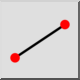

Creëer automatisch een lijn van hetzelfde type als een andere gekozen lijn.

Creëert lijnsegmenten van een begin- tot een eindpunt.
Creëert oneindige lijnen die door twee gegeven punten gaan. Deze worden ook wel X-lijnen of constructielijnen genoemd.
Creëert stralen van een gegeven beginpunt, door een ander punt met een oneindige lengte.